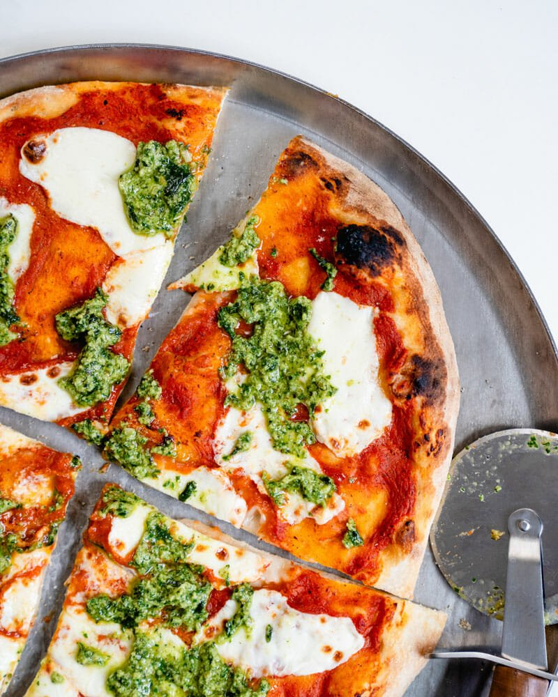

Here’s a recipe for real Italian pizza, and everything you need to know make it at home!

Want to make real Italian pizza at home? For over 10 years, Alex and I have been studying the art of homemade artisan pizza.
We’ve even taken a few trips to Italy to bring back secrets from Rome and Naples.
Want to make the best homemade pizza crust and pizza sauce? Want to bake it just right on a blazing hot pizza stone? We’ll show you how to do it all.
Let’s make Italian pizza together!
Prepare the cheese: If using fresh mozzarella cheese, slice it into ¼ inch thick pieces (see the photo). If it’s incredibly watery fresh mozzarella (all brands vary), you may want to let it sit on a paper towel to remove moisture for about 15 minutes then dab the mozzarella with the paper towel to remove any additional moisture.
Bake the pizza: When the oven is ready, dust a pizza peel with cornmeal or semolina flour. (If you don’t have a pizza peel, you can use a rimless baking sheet or the back of a rimmed baking sheet. But a pizza peel is well worth the investment!) Stretch the dough into a circle; see How to Stretch Pizza Dough for instructions. Then gently place the dough onto the pizza peel.
Spread the pizza sauce over the dough using the back of a spoon to create a thin layer. Add the mozzarella cheese. Top with a few pinches of kosher salt.
Use the pizza peel to carefully transfer the pizza onto the preheated pizza stone. Bake the pizza until the cheese and crust are nicely browned, about 5 to 7 minutes in the oven (or 1 minute in a pizza oven).
Dollop with the basil pesto. Slice into pieces and serve immediately.